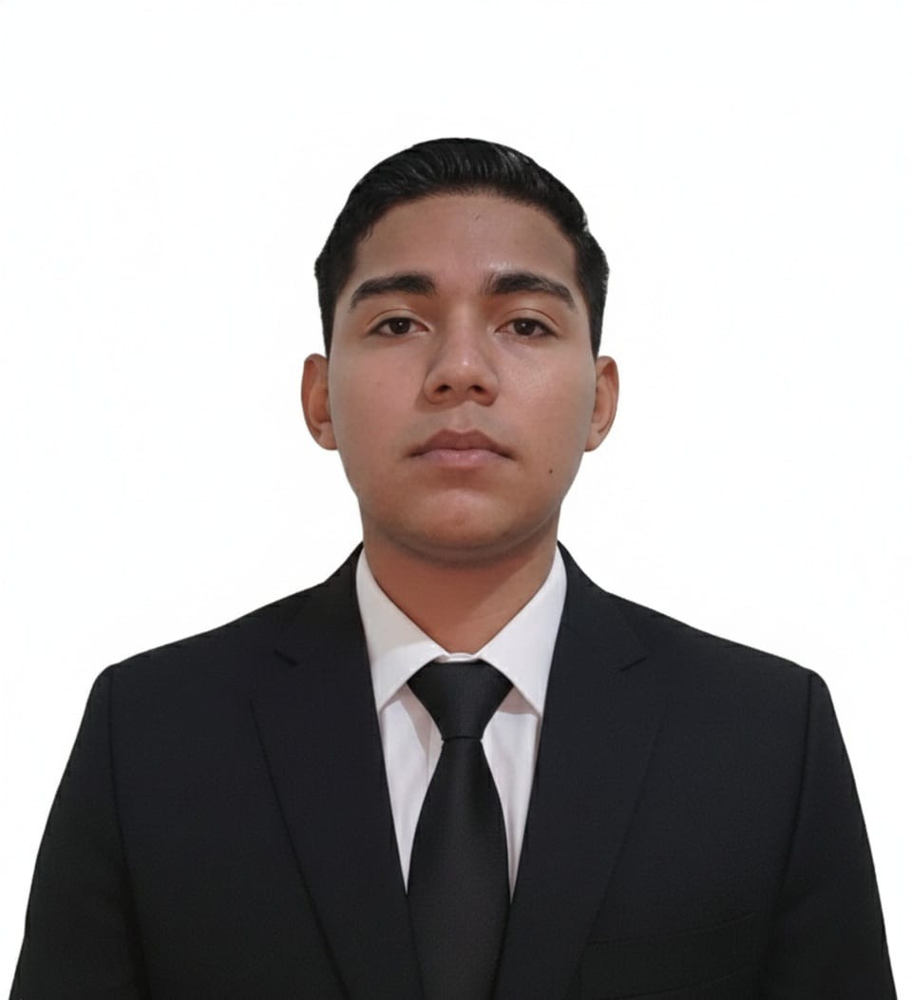

Estudiante de Ingeniería en Ciencias de la Computación en UNICAH, campus Sagrado Corazón de Jesús.
ContáctameMi nombre es Brayan Said Villalta López y tengo 20 años. Estudio Ingeniería en Ciencias de la Computación en la UNICAH, campus Sagrado Corazón de Jesús. A lo largo de la carrera he trabajado en desarrollo de software, sistemas operativos como Linux y Windows, y bases de datos relacionales y no relacionales.
He trabajado en proyectos tanto individuales como en equipo, colaborando con compañeros de clase para construir soluciones completas de software.
Los lenguajes que más me han parecido interesantes fueron:
Proyecto trabajado en equipo, creado para un negocio, realizado en Visual Studio con el lenguaje C#. Cuenta con una base de datos empleada en SQL, conectada a la nube y dividida en módulos funcionales para automatizar la forma de trabajo de la empresa y mejorar su eficiencia.
Ver repositorioPágina web realizada en equipo para la materia de Implementación de Software, dividida en secciones con productos, inicio, contactos y animación con JavaScript, aplicando un buen diseño con HTML y CSS.
Ver repositorio